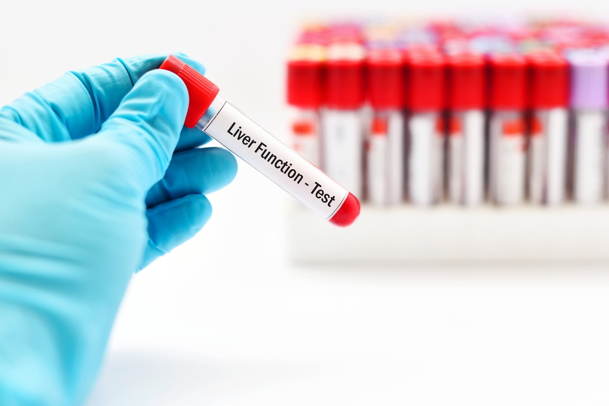

<!-- First Content Start from here -->
<div class="main-content">
    <div class="container">
        <div class="row">
            <div class="col-md-4">
                <h3 style="font-family: Cambria, Cochin, Georgia, Times, 'Times New Roman', serif;color: #000;">LFT Test
                    Profile</h3>
                <hr>
                <p style="color: #000;">As Known as <b>Liver Function Test Blood</b> </p>

                <p style="color: black;"> &#9989; Certified Labs</p>
                <p style="color: #000;"> &#9989; Home Sample Collection</p>
                <p style="color: #000;"> &#9989; Reports Guaranteed with in 24 hrs</p>
                <p style="color: #000;"> &#9989; Digital Reports</p>
            </div>

            <div class="col-md-6">

                
                <hr>
            </div>


            <div class="col-md-4">

            </div>

            <div class="col-md-6">
                <h4 style="font: normal; color: #000;">₹400</h4>
                <p>Pay via cash or <b> Digitally</b></p>
                <button type="button" class="btn btn-outline-secondary">Add in Cart</button>
                <button type="button" class="btn btn-info" (click)="onprofile()">Book Now</button>
                <hr>
            </div>

            <div class="col-md-4">

            </div>

            <!-- Next Content Start from Here -->
            <div class="col-md-8">
                <h3 style="font-family:'Times New Roman', Times, serif; color: #000; font: normal; margin-left: 55px;">
                    Why Book With Us ?</h3>
                <hr>
                <div class="header">
                    
                    <h4 style="font-family:'Times New Roman', Times, serif; color: #000; font: normal; ">Free Home
                        Sample Collection</h4>
                    <br>
                    <p style="color: #000;"> A certified professional will collect your sample from a location of<br>
                        your preference.</p>
                </div>
                <hr>
                <div class="header">
                    
                    <h4 style="font-family:'Times New Roman', Times, serif; color: #000; font: normal;  ">
                        Digital reports</h4>
                    <br>
                    <p style="color: #000;"> Get the reports right in your mailbox within 24 hours. You will be<br>
                        notified
                        of the tests requiring more time for investigation and <br> report generation..</p>
                </div>

                <hr>
                <div class="header">
                    
                    <h4 style="font-family:'Times New Roman', Times, serif; color: #000; font: normal;  ">
                        Offers and affordable prices</h4>
                    <br>
                    <p style="color: #000;">Get great discounts and offers on tests and packages..</p>
                </div>

            </div>
            <!-- Next Phase regarding the test -->

            <div class="col-md-4">

            </div>

            <div class="col-md-8">
                <mat-accordion>
                    <mat-expansion-panel (opened)="panelOpenState = true" (closed)="panelOpenState = false">
                        <mat-expansion-panel-header>

                            <mat-panel-title style="color: #17a2b8; text-align:center;">
                                What is this Test...?
                            </mat-panel-title>

                        </mat-expansion-panel-header>
                        <p>Liver function test is a set of blood tests used to monitor the working of the liver or to
                            screen the liver damage or inflammation. This test helps in diagnosing a liver disease or
                            liver condition. This test also measures the amount of certain enzymes and proteins in the
                            blood. Some of these tests are helpful in estimating the performance of the liver functions
                            like producing proteins, clearing of waste products in blood like bilirubin and some tests
                            are used to measure the amount of enzymes that are produced by the liver which may indicate
                            damage of the liver..</p>

                        <h5 style="color: black; font: bold;">Liver function tests include the following tests:</h5>
                        <p> &#10066;Albumin- Albumin is a protein made by the liver. Measuring the amount of albumin
                            shows if the liver is producing the required quantity of albumin</p>
                        <p> &#10066; Total protein- Measures the amount of proteins made by the liver. Albumin and
                            globulin are the important proteins made by the liver.</p>
                        <p> &#10066; Total bilirubin- Bilirubin is a yellow pigment in the blood. It passes through the
                            liver and gets excreted. Elevated levels may show liver damage or liver disease.</p>
                        <p> &#10066; Aspartate transaminase (AST)- It is an enzyme which metabolizes alanine a type of
                            amino acid. Elevated levels may show liver damage or liver disease.</p>
                        <p> &#10066; Alanine transaminase (ALT)- It is an enzyme which metabolizes protein. Elevated
                            levels indicate liver damage or liver disease.</p>
                        <p> &#10066;Alkaline phosphatase (ALP)- It is an enzyme present in liver, bones and bile ducts.
                            High levels of this show liver damage or liver disease. </p>
                        <p> &#10066;Gamma-glutamyltransferase (GGT)- It is an enzyme in the liver used for estimating
                            bile duct problems. </p>

                        <h5 style="color: black; font: bold;">Why this test is performed ?</h5>
                        <p>This test may be recommended to you if you experience certain symptoms like dark colored
                            urine, diarrhea, nausea and vomiting, loss of appetite, yellow color skin and eyes, light
                            colored or bloody stools, swollen abdomen, fluid accumulation in abdomen (ascites), pain in
                            abdomen, tiredness, weight loss or weight gain, etc. This test may also be recommended if
                            you have a history of viral hepatitis or a family history of liver disease, drinking too
                            much alcohol or on a medication which may damage your liver function</p>
                    </mat-expansion-panel>
                    <br><br>
                </mat-accordion>

                <mat-accordion>
                    <mat-expansion-panel (opened)="panelOpenState = true" (closed)="panelOpenState = false">
                        <mat-expansion-panel-header>

                            <mat-panel-title style="color: #17a2b8; text-align:center;">
                                Test Preparation
                            </mat-panel-title>

                        </mat-expansion-panel-header>
                        <p>Inform your doctor if you are on any medications, have any allergies or underlying medical
                            conditions before your LFT Test. Your doctor will give specific instructions depending on
                            your condition on how to prepare for LFT Test.

                            Since some foods and medicines may interfere with your test results, your doctor may ask you
                            to fast for 10 to 12 hours prior to the test without taking food, drinks or medicines...</p>
                    </mat-expansion-panel>

                </mat-accordion>

            </div>


        </div>
    </div>
</div>